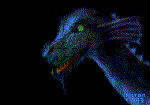

| Alignment |
| Back to Bits Of Info. |
| Alignment measures your character's morality. All new characters start with an alignment of Good with Good tendancies. Each non-hostile creature your character kills moves your alignment one step closer to ultimate Evil. Dogs, Deer and Children that are killed drops you -2 levels each. To check Alignment, type List Stats in Command Mode. |
| Good with Good tendancies. Paladins must be G/G at all times or become a Fighter. To get back to G/G, do the Betty Quest in Frore or Timmy Quest in Cobrahn. |
| Good with Neutral tendancies. This is the highest level you can atone to with a scroll. |
| G/G |
| G/N |
| Neutral with Neutral tendancies. Townies start stealing from you. |
| Neutral with Evil tendacies. |
| N/N |
| N/E |
| E/E |
| Evil with Evil tendancies. Townies will attack you at every opportunity. You must be E/E to do Duke quest. -250 is the most evil you can get. |
 |
| Where to get Atone scrolls? Kill Frore Minotaurs either in the KM dungeons or in the Betty/Vampire building. Use a "trash" crit to cast in on you. |
 |
 |